4130B74 return pipe between power steering case and duplex pipes r r
- Path
- Procedures > 41 STEERING > 4130 POWER ASSISTED STEERING > 4130B power steering hydraulic sytem > 4130B74 return pipe between power steering case and duplex pipes r r
- Kind
- repair procedure (removal / refitting; the operation number is the code)
- Applies to
- engines: 1.6 TS , 1.8 TS, 2.0 JTS, 2.5 V6, 1.9 JTD 8v , 2.0 JTS, 2.4 JTD 10v, 2.4 JTD 20v; all production periods
- Interactive page
- https://sloeber94.github.io/elrnDB-a156/en/#/3238148
Applies to: engines: 1.6 TS , 1.8 TS, 2.0 JTS, 2.0 JTS; all production periods
 Removing
Removing
 Refitting
RefittingPosition the vehicle on the ramp
Remove the power steering fluid reservoir and drain the fluid using a suitable syringe.
4450B10 Front WHEEL (one) - R.R. (Right side).
7055B64 Engine compartment DUST shield in front wheel arch (one), left or right - R.R. .
1. Undo the nuts (1a) and release the power steering pipes (1b) from the mounting bracket.
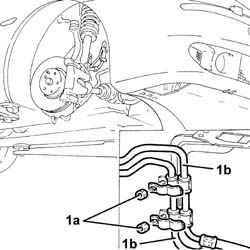
Applies to: engines: 1.6 TS , 1.8 TS, 2.0 JTS, 2.0 JTS; all production periods
Applies to: engines: 1.6 TS , 1.8 TS; all production periods
Applies to: engines: 2.0 JTS, 2.0 JTS; all production periods
Proceed with removal 1076B18 rigid section of exhaust pipe between catalytic converter and silencer - r + r .
Applies to: engines: 1.6 TS , 1.8 TS, 2.0 JTS, 2.0 JTS; all production periods
1. Undo the connecctor (1a) and disconnect the rigid return pipe between the power steering box and heat exchanger (1b), power steering box side.
2. Release the rigid return pipe between power steering box and heat exchanger from the retaining bands.
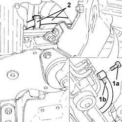
Applies to: engines: 1.6 TS , 1.8 TS, 2.0 JTS, 2.0 JTS; all production periods
1. Undo the nut securing the power steering pipes to the crossmember and remove the band.
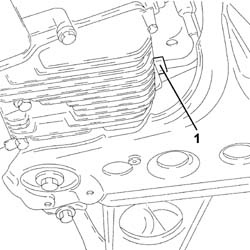
Applies to: engines: 1.6 TS , 1.8 TS, 2.0 JTS, 2.0 JTS; all production periods
1. Disconnect the rapid attachment coupling on the rigid return pipe between power steering box and heat exchanger.
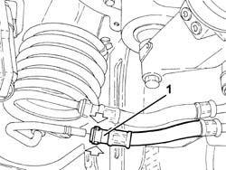
Applies to: engines: 1.6 TS , 1.8 TS, 2.0 JTS, 2.0 JTS; all production periods
1. From the wheelarch, withdraw and remove the rigid return pipe between the power steering box and heat exchanger.
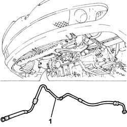
Applies to: engines: 1.6 TS , 1.8 TS, 2.0 JTS, 2.0 JTS; all production periods
Refitting
RemovingReplace the rigid return pipe between power steering box and heat exchanger in its seating.
Connect the rapid attachment coupling of the rigid return pipe between the power steering box and heat exchanger.
Secure the power steering pipes to the crossmember with the relevant band and tighten the nut.
Fix the rigid return pipe between power steering box and heat exchanger to the band.
Connect the rigid return pipe between power steering box and heat exchanger, power steering box side, and tighten the relevant connector to the specified torque.
 | Fastening | Component | Ø | Value (daNm) |
|---|---|---|---|---|
- | Connector | POWER STEERING BOX/EXCHANGE RIGID PIPE | M12 | (Power steering box side) 2.8 - 3.2 |
Applies to: engines: 1.6 TS , 1.8 TS; all production periods
Applies to: engines: 2.0 JTS, 2.0 JTS; all production periods
Proceed with refitting 1076B18 rigid section of exhaust pipe between catalytic converter and silencer - r + r .
Applies to: engines: 1.6 TS , 1.8 TS, 2.0 JTS, 2.0 JTS; all production periods
7055B54 under-engine guard - r r .
Secure the power steering pipes to the mounting bracket and tighten the nuts.
7055B64 Engine compartment DUST shield in front wheel arch (one), left or right - R.R. .
4450B10 Front WHEEL (one) - R.R. (Right side).
Top up the power assisted circuit with the recommended fluid.
 | Type | Component | Name | Qty. |
|---|---|---|---|---|
- | Fluid | HYDRAULIC POWER ASSISTED STEERING SYSTEM | TUTELA GI/A | 1.3 |
Bleed the power steering system as described below
With the front wheels raised off the ground, with the engine switched off turn the steering wheel to full lock, left and right, 4-5 times.
Check and, if necessary, top up the fluid level in the reservoir.
Remove the car from the ramps.
Start the engine and turn the steering wheel to full lock, left and right, 4 - 5 times.
Top up the fluid level in the reservoir.
Applies to: engines: 2.5 V6; all production periods
Removing
RefittingPosition the vehicle on the ramp
Drain the power steering fluid from the reservoir using a suitable syringe.
Proceed with removal 4450B10 Front WHEEL (one) - R.R. (Left side).
Proceed with removal 7055B64 Engine compartment DUST shield in front wheel arch (one), left or right - R.R. (Left side).
Proceed with removal 7055B54 under-engine guard - r r .
Proceed with the removal 1076B52 exhaust pipe (one) leaving l/h or r/h exhaust manifold - r + r (Right and left sides).
1. Working from the left front wheel arch, loosen the band and release the power steering pipes.
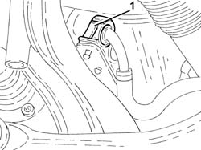
Applies to: engines: 2.5 V6; all production periods
Proceed with removal 1048A34 sleeve(s) from flow meter to air supply capacity case - r + r .
Proceed with removal 5530B10 battery - r+r .
Proceed with removal 5530B52 Battery DRIP TRAY/SUPPORT - R.R. .
1. Release the power steering system pipes from the fastenings.
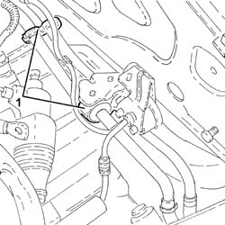
Applies to: engines: 2.5 V6; all production periods
1. Undo the band (1a) and disconnect the pipe from power steering box to heat exchanger (1b), coil side.
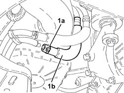
Applies to: engines: 2.5 V6; all production periods
1. Undo the nuts (1a) and remove the protective heat shield (1b) from the power steering box.
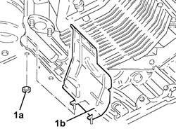
Applies to: engines: 2.5 V6; all production periods
1. Undo the connector (1a) and disconnect the pipe from power steering box to heat exchanger (1b), power steering box side.
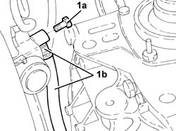
Applies to: engines: 2.5 V6; all production periods
1. Position a hydraulic jack under the differential.
2. Undo the bolt fixing the power unit gearbox side rigid support to the flexible mounting.
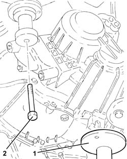
Applies to: engines: 2.5 V6; all production periods
1. Lower the power unit, as necessary, using the hydraulic jack and remove the pipe from power steering pump to heat exchanger.
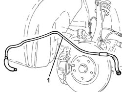
Applies to: engines: 2.5 V6; all production periods
Refitting
RemovingRefit the pipe from power steering box to heat exchanger in its seating.
Place the power unit back in its housing using the hydraulic jack.
1. Undo the bolt fixing the gearbox side rigid power unit support to the flexible block to the specified torque.
| Fastening | Component | Ø | Value (daNm) |
|---|---|---|---|---|
1 | Bolt | POWER UNIT GEAR BOX END RIGID MOUNT | M10 | (Flexible mounting side) 4.3 ÷ 5.3 |
2. Remove the hydraulic jack from under the differential.
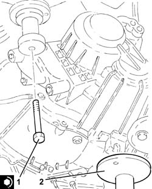
Applies to: engines: 2.5 V6; all production periods
1. Connect the pipe from power steering box to heat exchanger (1a), power steering box side, and tighten the connector (1b) to the specified torque.
| Fastening | Component | Ø | Value (daNm) |
|---|---|---|---|---|
1b | Connector | POWER STEERING BOX/EXCHANGE RIGID PIPE | M12 | (Power steering box side) 2.8 - 3.2 |
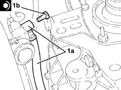
Applies to: engines: 2.5 V6; all production periods
Refit the power steering box heat shield in its seat and tighten the nuts.
Connect the pipe from power steering box to heat exchange, coil side, and tighten the band.
Secure the power steering system pipes to the fastenings.
Proceed with refitting 5530B52 Battery DRIP TRAY/SUPPORT - R.R. .
Proceed with refitting 5530B10 battery - r+r .
Proceed with refitting 1048A34 sleeve(s) from flow meter to air supply capacity case - r + r .
Secure the power assisted steering system pipes using the band.
Proceed with the refitting 1076B52 exhaust pipe (one) leaving l/h or r/h exhaust manifold - r + r (Right and left sides).
Proceed with refitting 7055B54 under-engine guard - r r .
Proceed with the refitting 7055B64 Engine compartment DUST shield in front wheel arch (one), left or right - R.R. (Left side).
Proceed with the refitting 4450B10 Front WHEEL (one) - R.R. (Left side).
Fill the power steering circuit with the recommended fluid.
| Type | Component | Name | Qty. |
|---|---|---|---|---|
- | Fluid | POWER ASSISTED STEERING CIRCUIT | TUTELA GI/A | - |
Bleed the power steering system as described below
With the front wheels raised off the ground, with the engine switched off turn the steering wheel to full lock, left and right, 4-5 times.
Check and, if necessary, top up the fluid level in the reservoir.
Remove the car from the ramps.
Start the engine and carry out 4 - 5 full steering wheel turn cycles (right and left).
Top up the fluid level in the reservoir.
Applies to: engines: 1.9 JTD 8v , 2.4 JTD 10v; all production periods
Removing
RefittingPosition the vehicle on the ramp
Drain the power steering fluid from the reservoir using a suitable syringe.
5530B52 Battery DRIP TRAY/SUPPORT - R.R.
4450B10 Front WHEEL (one) - R.R.
7055B64 Engine compartment DUST shield in front wheel arch (one), left or right - R.R.
Pull up the left front wheel arch partly
1008A42 gear box left rigid mount - r r
1008B30 gearbox side mount flexible block - replace
1076B50 exhaust pipe attachment to engine - r + r
1. Disconnect the rigid return pipe between power steering box and heat exchanger on the heat exchanger side.
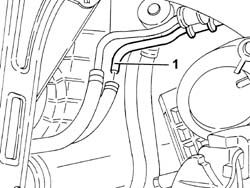
Applies to: engines: 1.9 JTD 8v , 2.4 JTD 10v; all production periods
1. Disconnect the rigid return pipe between power steering box and heat exchanger, steering box side.
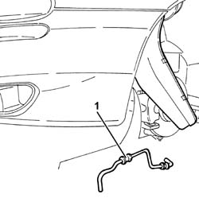
Applies to: engines: 1.9 JTD 8v , 2.4 JTD 10v; all production periods
Refitting
RemovingFit and connect the rigid return pipe between the power steering box and heat exchanger
1076B50 exhaust pipe attachment to engine - r + r
1008B30 gearbox side mount flexible block - replace
1008A42 gear box left rigid mount - r r
Refit the left front wheel arch in its housing and secure.
7055B64 Engine compartment DUST shield in front wheel arch (one), left or right - R.R.
4450B10 Front WHEEL (one) - R.R.
5530B52 Battery DRIP TRAY/SUPPORT - R.R.
Remove the car from the ramps.
Fill the power steering circuit with the recommended fluid.
| Type | Component | Name | Qty. |
|---|---|---|---|---|
- | Fluid | POWER ASSISTED STEERING CIRCUIT | TUTELA GI/A | - |
Bleed the power steering system as described below
With the front wheels raised off the ground, with the engine switched off turn the steering wheel to full lock, left and right, 4-5 times.
Check and, if necessary, top up the fluid level in the reservoir.
Position the vehicle on the ground and start up the engine.
Carry out 4 - 5 complete steering wheel rotation cycles (right and left).
Top up the fluid level in the reservoir.
Applies to: engines: 2.4 JTD 20v; all production periods
Removing
RefittingPosition the vehicle on the ramp
Proceed with removal 1016A10 sound-proofing cover - r + r .
Proceed with removal 5530B10 battery - r+r .
Proceed with removal 5530B52 Battery DRIP TRAY/SUPPORT - R.R. .
Proceed with removal 4450B02 left front wheel r r .
Proceed with removal - 7055B90 Left front WHEEL ARCH LINER - R.R. .
Proceed with removal 7055B54 under-engine guard - r r .
Proceed with removal 1048B14 air delivery pipe between turbo charger and heat exchanger - replace .
Proceed with removal 1008A42 gear box left rigid mount - r r .
Proceed with removal 1008B30 gearbox side mount flexible block - replace .
Proceed with removal 1076B70 exhaust pipe between pre-catalytic converter and catalytic converter - r r .
1. Disconnect the rapid connector for the return pipe between the power assisted steering box and the duplex pipes, duplex pipes side.
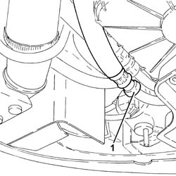
Applies to: engines: 2.4 JTD 20v; all production periods
1. Loosen the band (1a), then disconnect and remove the return pipe between the power assisted steering box and the duplex pipes (1b) after having released it from the fastenings.
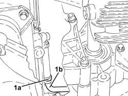
Applies to: engines: 2.4 JTD 20v; all production periods
Refitting
RemovingPlace the return pipe between the power assisted steering box and the duplex pipes back in its housing, tighten the band and connect the rapid connector.
Proceed with refitting 1076B70 exhaust pipe between pre-catalytic converter and catalytic converter - r r .
Proceed with refitting 1008B30 gearbox side mount flexible block - replace .
Proceed with refitting 1008A42 gear box left rigid mount - r r .
Proceed with refitting 1048B14 air delivery pipe between turbo charger and heat exchanger - replace .
Proceed with refitting 7055B54 under-engine guard - r r .
Proceed with refitting - 7055B90 Left front WHEEL ARCH LINER - R.R. .
Proceed with refitting 4450B02 left front wheel r r .
Proceed with refitting 5530B52 Battery DRIP TRAY/SUPPORT - R.R. .
Proceed with refitting 5530B10 battery - r+r .
Proceed with refitting 1016A10 sound-proofing cover - r + r .
Fill the power steering circuit with the recommended fluid.
| Type | Component | Name | Qty. |
|---|---|---|---|---|
- | Fluid | HYDRAULIC POWER ASSISTED STEERING SYSTEM | TUTELA GI/A | 1.3 |
Bleed the power steering system as described below
With the front wheels raised off the ground, with the engine switched off turn the steering wheel to full lock, left and right, 4-5 times.
Check and, if necessary, top up the fluid level in the reservoir.
Remove the car from the ramps.
Start the engine and carry out 4 - 5 full steering wheel turn cycles (right and left).
Top up the fluid level in the reservoir.
Topics linked from this page (15)
- 1008A42 gear box left rigid mount - r r
- 1008B30 gearbox side mount flexible block - replace
- 1016A10 sound-proofing cover - r + r
- 1048A34 sleeve(s) from flow meter to air supply capacity case - r + r
- 1048B14 air delivery pipe between turbo charger and heat exchanger - replace
- 1076B18 rigid section of exhaust pipe between catalytic converter and silencer - r + r
- 1076B50 exhaust pipe attachment to engine - r + r
- 1076B52 exhaust pipe (one) leaving l/h or r/h exhaust manifold - r + r
- 1076B70 exhaust pipe between pre-catalytic converter and catalytic converter - r r
- 4450B02 left front wheel r r
- 4450B10 Front WHEEL (one) - R.R.
- 5530B10 battery - r+r
- 5530B52 Battery DRIP TRAY/SUPPORT - R.R.
- 7055B54 under-engine guard - r r
- 7055B64 Engine compartment DUST shield in front wheel arch (one), left or right - R.R.